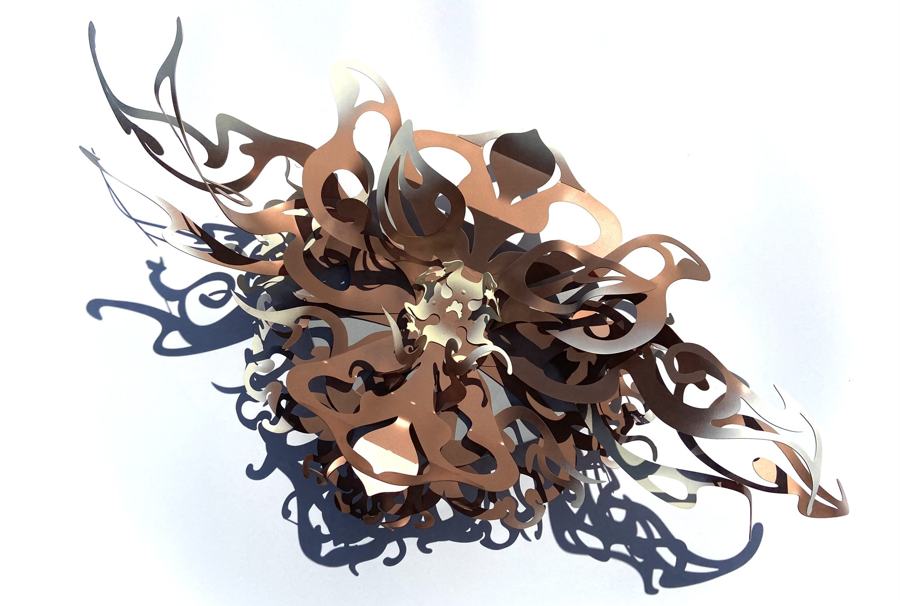

연화 2
- 연도Year
- 2023
- 재료Material
- EGI
- 크기Size
- 55×90×20cm
- 시리즈Series
- 금속 협업Metal Collaboration
- 협업Collaboration
- 팀 워밍 (warming)
- 프로젝트Project
- 금속 협업
자연의 일부를 손으로 만져보면 부드럽고 연하다. 한 손에 잡히고 내가 가질 수도 있다.
하지만 자연은 그리 쉽게 잡히고 통제할 수 있는 것이 아니라는 것을 잘 안다. 얕게 흐르는 물줄기, 작은 꽃 한 송이, 손등에 앉은 눈송이, 흔들리는 갈대 한 가닥. 일시적이고도 유약한 그 모든 것들을 관찰해본다.
다양한 온도와 모양, 질감과 나타나는 시기. 분명 모두 다르지만 결코 약하지 않은 기운이 느껴진다. 생기인지 운동감인지 숭고함인지 확신할 수는 없지만 부드럽고 약하면서도 동시에 강한 그 기운. 그 주관적인 감정과 감상을 단단한 금속 소재의 조형으로 제작해 보았다.
When you touch a piece of nature with your hand, it feels soft and tender. It fits in one hand, and I could even keep it.
But I know well that nature is not something so easily grasped or controlled. A shallow trickle of water, a single small flower, a snowflake landing on the back of a hand, a single swaying reed. I observe all of these fleeting and fragile things.
Their temperatures and shapes, their textures and the times they appear: they are surely all different, yet I sense in them an energy that is never weak. I can't be sure whether it is vitality, a sense of movement or the sublime, but it is an energy that is soft and frail and at the same time strong. I tried to give form to those subjective feelings and impressions in sculpture made of hard metal.